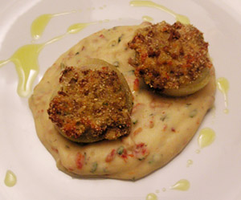

Cipolle ripiene
5 von 6Aus 4 mehlig kochenden Kartoffeln, Kartoffelstock zubereiten. 4 grosse Zwiebeln schälen und in Salzwasser 25 min kochen. Abkühlen lassen und längs halbieren. Die Zwiebel hälften auseinderpellen, sodass Schiffchen entstehen. Eine Zwiebel in Olivenöl glasig dünsten und 500gr Hackfleisch dazugeben.
Zum Kartoffelstock geben und mit Petersilie, 3 Eiern und 100gr Parmesan vermengen. Abschmecken und mit Semmelbrösel zu einer recht trockenen Masse verarbeiten. Die Zwiebelschiffchen mit der Masse füllen und im vorgeheizten Ofen bei 180 Grad ca 25 Min überbacken.
